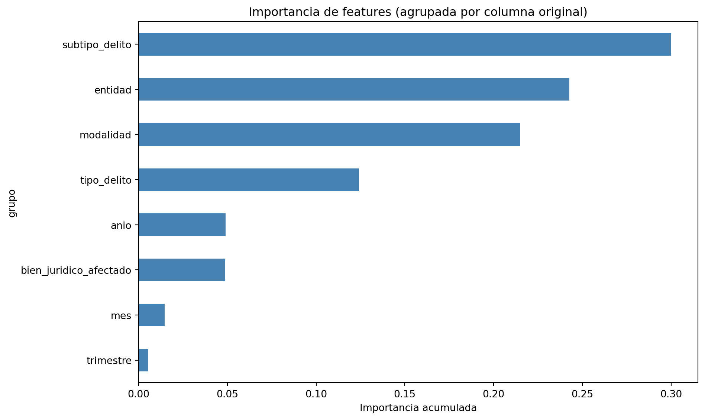

Ahora, lo que buscamos es construir un modelo de regresión capaz de predecir la incidencia delictiva mensual a nivel estatal en México, utilizando como variables predictoras la entidad federativa, el bien jurídico afectado, el tipo y subtipo de delito, la modalidad y features temporales (año, mes, trimestre).
Para esto utilizaremos un Random Forest Regressor dentro de un pipeline de scikit-learn que incluye lo siguiente:
Preprocesamiento: codificación One-Hot de variables categóricas y estandarización de variables numéricas.
Búsqueda de hiperparámetros: Usaremos RandomizedSearchCV con validación cruzada de 3 pliegues, más eficiente que una búsqueda exhaustiva para este volumen de datos.
Transformación del objetivo: Aplicaremos log1p a la variable objetivo para mitigar el sesgo observado en el EDA.
El dataset contiene ~414,000 registros de incidencia delictiva estatal , por lo que trabajar con todos estos registros es demasiado pesado en recursos. Es por esto que para este modelo trabajaremos con una muestra estratificada de 50,000 registros que preserva la proporción de tipos de delito.
El cuaderno de Jupyter Notebook que acompaña esta sección se encuentra disponible haciendo click aquí.
Cargamos el dataset limpio resultado del EDA y aplicamos un muestreo estratificado sobre la columna tipo_delito para reducir los ~414,000 registros a 50,000. Esto preserva la distribución de tipos de delito y reduce drásticamente el tiempo de entrenamiento sin comprometer la calidad del modelo, ya que Random Forest muestra rendimientos decrecientes con volúmenes de datos muy grandes.
Luego, separamos las features de nuestra variable objetivo: incidencia_delictiva, y aplicamos una transformación logarítmica con log1p para compensar el fuerte sesgo a la derecha observado en el EDA.
Mostrar código
RUTA_DATOS =str(Path.cwd().parent /"data"/"processed"/"INM_estatal_dic25_clean.csv") # por alguna razón así identificó más fácil la rutadf = cargar_preparar_datos(RUTA_DATOS)print(f"Muestra estratificada: {df.shape[0]:,} filas x {df.shape[1]} columnas")df.head(3)
Muestra estratificada: 50,000 filas x 7 columnas
fecha
entidad
bien_juridico_afectado
tipo_delito
subtipo_delito
modalidad
incidencia_delictiva
249379
2021-03-01
Puebla
El patrimonio
Otros delitos contra el patrimonio
Otros delitos contra el patrimonio
Otros delitos contra el patrimonio
26
57395
2016-09-01
Morelos
La vida y la Integridad corporal
Lesiones
Lesiones dolosas
No especificado
144
289658
2022-12-01
Quintana Roo
El patrimonio
Robo
Robo de vehículo automotor
Robo de coche de 4 ruedas Con violencia
11
La columna fecha, al ser de tipo datetime, se descompone en tres features numéricas: anio, mes y trimestre. Esto permite al modelo capturar tendencias temporales (tendencia anual, estacionalidad mensual y patrones por trimestre) sin introducir alta cardinalidad como haría un One-Hot de fechas individuales.
Separamos el 80% de los datos para entrenamiento y el 20% restante para prueba, con una semilla fija para reproducibilidad.
El preprocesador aplica dos transformaciones dentro del pipeline:
OneHotEncoder sobre las columnas categóricas (entidad, bien_juridico_afectado, tipo_delito, subtipo_delito, modalidad). Esto para convertir cada categoría en una columna binaria. Se configura handle_unknown="ignore" para que no falle si aparece una categoría nueva en el conjunto de prueba.
StandardScaler sobre las columnas numéricas (anio, mes, trimestre) para estandarizar la media 0 y la desviación a 1.
Al integrar el preprocesador dentro del Pipeline, se evita el data leakage, pues asi el OneHotEncoder y el StandardScaler se ajustan únicamente sobre los datos de entrenamiento en cada pliegue de la validación cruzada.
Utilizamos RandomizedSearchCV para buscar los mejores hiperparámetros del Random Forest. La razón principal por la que ocupamos esto y no GridSearchCV es por que el segundo evalúa todas las combinaciones posibles, mientras que el primero muestrea un número fijo de combinaciones aleatorias, lo que resulta más eficiente con datasets grandes como lo es el nuestro.
Ocuparemos el siguiente espacio de búsqueda:
Parámetro
Valores
n_estimators
100, 150
max_depth
15, None (sin límite)
min_samples_split
2, 5
junto a la siguiente configuración (la cual está hardodeada en src/model/entrenamiento.py):
n_iter=8: evalúa 8 combinaciones aleatorias de los parámetros.
cv=3: validación cruzada con 3 pliegues.
scoring="r2": optimiza el coeficiente de determinación R².
n_jobs=-1: utiliza todos los núcleos disponibles del procesador.
Fitting 3 folds for each of 8 candidates, totalling 24 fits
Mejores parámetros: {'model__n_estimators': 150, 'model__min_samples_split': 2, 'model__max_depth': None}
Mejor R² (CV): 0.9201
Evaluación del modelo
Evaluamos el rendimiento del mejor modelo sobre el conjunto de prueba (20% de los datos, no utilizado en el entrenamiento ni en la búsqueda de hiperparámetros) en base a las siguientes métricas:
MAE (Error Absoluto Medio): error promedio en las mismas unidades que el target (escala log). Un valor de 0.38 indica que, en promedio, la predicción se desvía ~0.38 unidades logarítmicas del valor real.
MSE (Error Cuadrático Medio): penaliza más los errores grandes.
RMSE (Raíz del Error Cuadrático Medio): en la misma escala que el target, más interpretable que el MSE.
R² (Coeficiente de Determinación): proporción de la varianza explicada por el modelo. Un valor de 1.0 es predicción perfecta; 0.0 equivale a predecir siempre la media.
El Random Forest permite extraer la importancia de cada feature, medida por cuánto reduce la impureza de los nodos del árbol. Dado que las 5 columnas categóricas fueron codificadas con One-Hot (generando cientos de columnas binarias), agrupamos la importancia por columna original para obtener una visión interpretable de qué variables son las que más contribuyen a las predicciones.
Mostrar código
preprocessor = mejor_modelo.named_steps["preprocessor"]feature_names = mejor_modelo[:-1].get_feature_names_out()importances = mejor_modelo[-1].feature_importances_cat_cols = [t[2] for t in preprocessor.transformers_ if t[0] =="cat"][0]num_cols = [t[2] for t in preprocessor.transformers_ if t[0] =="num"][0]def agrupar_feature(nombre):if nombre.startswith("num__"):return nombre[5:] codificado = nombre[5:]for col in cat_cols:if codificado.startswith(col +"_"):return colreturn codificadoimportance_df = pd.DataFrame({"feature": feature_names,"importance": importances})importance_df["grupo"] = importance_df["feature"].apply(agrupar_feature)importancia_por_grupo = ( importance_df.groupby("grupo")["importance"] .sum() .sort_values(ascending=True))plt.figure(figsize=(10, 6))importancia_por_grupo.plot(kind="barh", color="steelblue")plt.xlabel("Importancia acumulada")plt.title("Importancia de features (agrupada por columna original)")plt.tight_layout()plt.show()

Importancia de features agrupada por columna original
Interpretación del Modelo
El modelo obtenido tiene las siguientes implicaciones:
R² = 0.93 — Alta capacidad predictiva. El 93% de la variación en la incidencia delictiva se explica por la combinación de entidad federativa, clasificación delictiva y variables temporales. Esto indica que el delito en México no es un fenómeno aleatorio: sigue patrones sistemáticos y repetibles que el modelo puede capturar.
Patrones geográficos. Cada entidad federativa tiene un “perfil delictivo” distintivo. Estados como CDMX, Estado de México y Jalisco concentran volúmenes altos en ciertas categorías, mientras que estados como Colima o Tlaxcala muestran otras dinámicas. La feature entidad captura estas diferencias estructurales.
Patrones por clasificación delictiva. La jerarquía bien_juridico → tipo → subtipo → modalidad permite al modelo distinguir entre categorías con volúmenes muy dispares. Por ejemplo, “homicidio” tiene incidencias bajas mientras que “robo” tiene incidencias altas; la modalidad (con/sin violencia) añade granularidad adicional.
Patrones temporales. Las features anio, mes y trimestre capturan:
Tendencia: incrementos o disminuciones sostenidos a lo largo de los años.
Estacionalidad: ciclos mensuales o trimestrales (por ejemplo, incrementos en diciembre por temporadas vacacionales).
MAE ≈ 0.31 en escala log. Para interpretar en unidades originales: exp(0.31) ≈ 1.36, lo que significa que el error promedio de predicción es de aproximadamente 36% sobre el valor real. Para un dataset con valores que van de decenas a miles de incidentes, esto es un margen de error razonable.
Análisis gráfico
Las gráficas de Real vs Predicho y de residuales permiten evaluar visualmente la calidad del ajuste. En un buen modelo, los puntos deben agruparse alrededor de la diagonal en la primera gráfica, y los residuales deben distribuirse simétricamente alrededor de cero en la segunda.
Para verificar que el modelo aporta valor real, lo comparamos contra un DummyRegressor que simplemente predice la media del target en cada caso. Si el Random Forest no supera significativamente a este modelo trivial, significaría que las features elegidas no tienen poder predictivo.
El DummyRegressor obtiene un R² ≈ 0 (como es esperado, ya que predecir la media no explica variación). El Random Forest, con un R² significativamente mayor, demuestra que las features utilizadas capturan patrones reales de la incidencia delictiva.
Persistencia del modelo
Finalmente, guardamos el modelo entrenado en un archivo .joblib para su uso futuro en predicciones o análisis adicionales. Debido al peso del modelo final este se puede descargar desde aquí para evitar problemas de espacio en el repositorio y de ésta página.
Sin embargo, la instrucción para guardar el modelo son las siguientes:
Ahora intentaremos predecir los valores en base al modelo. Queremos predecir la incidencia delictiva de los siguientes casos:
entidad
bien_juridico_afectado
tipo_delito
subtipo_delito
modalidad
anio
mes
trimestre
Ciudad de México
El patrimonio
Robo
Robo de vehiculo automotor
Robo de coche de 4 ruedas Con violencia
2026
5
1
Jalisco
La vida y la Integridad corporal
Homicidio
Homicidio doloso
Con arma de fuego
2026
5
1
Mostrar código
modelo = cargar_modelo("../models/modelo_incidencia_delictiva.joblib")# Preparación de los datos de entrada# Las features deben coincidir con las usadas en el entrenamiento:# - Categóricas: entidad, bien_juridico_afectado, tipo_delito, subtipo_delito, modalidad# - Numéricas: anio, mes, trimestredatos_ejemplo = pd.DataFrame({"entidad": ["Ciudad de México", "Jalisco"],"bien_juridico_afectado": ["El patrimonio", "La vida y la Integridad corporal"],"tipo_delito": ["Robo", "Homicidio"],"subtipo_delito": ["Robo de vehiculo automotor", "Homicidio doloso"],"modalidad": ["Robo de coche de 4 ruedas Con violencia", "Con arma de fuego"],"anio": [2026, 2026],"mes": [5, 5],"trimestre": [1, 1]})# El modelo predice en escala logarítmica (log1p), por lo que debemos invertir la transformaciónpredicciones_log = modelo.predict(datos_ejemplo)predicciones = np.expm1(predicciones_log) # Inversión de log1presultados = datos_ejemplo.copy()resultados["incidencia_predicha"] = predicciones.round(0).astype(int)resultados
El modelo de Random Forest logra predecir la incidencia delictiva estatal mensual con un R² de 0.93, superando ampliamente a la línea base (R² ≈ 0). Esto confirma que:
La incidencia delictiva en México está fuertemente determinada por la ubicación geográfica, el tipo de delito y el momento en el tiempo. El 93% de la variación en la incidencia delictiva se explica por la combinación de ubicación geográfica, clasificación delictiva y momento en el tiempo. Esto descarta la hipótesis de que la criminalidad sea un fenómeno aleatorio o caótico: sigue patrones estables y recurrentes que un modelo de aprendizaje automático puede capturar con alta precisión.
Las variables utilizadas (entidad, clasificación delictiva, año/mes/trimestre) son suficientes para construir un modelo predictivo robusto. Sobretodo con estos datos más recientes, ya que el EDA mostró que la incidencia delictiva no ha decrecido entre 2015 y 2025, con un incremento notable desde 2022. Además, se observa estacionalidad: los picos se concentran entre marzo y junio en los últimos años (antes eran mayo-agosto). El modelo captura estos ciclos a través de las features anio, mes y trimestre, lo que permite identificar cuándo ocurren los periodos de mayor riesgo.
Los patrones delictivos son estables y predecibles en condiciones normales, lo cual es relevante para la planeación de políticas de seguridad. En particular, la clasificación delictiva es el predictor más potente, ya que la jerarquía bien_juridico → tipo → subtipo → modalidad permite distinguir entre categorías con volúmenes drásticamente diferentes. Como se vio en el EDA, “Robo” es el delito más reportado , pero la modalidad (con violencia, sin violencia, de vehículo automotor, etc.) añade granularidad que el modelo aprovecha para hacer predicciones más precisas.
Limitaciones
El modelo aprende patrones históricos y no puede predecir anomalías como pandemias, crisis o cambios de política pública. El caso de 2020 (valores inusualmente bajos por COVID-19) es un ejemplo de evento que el modelo no anticiparía.
Los datos dependen de denuncias ante el Ministerio Público, por lo que zonas con bajo reporte pueden tener valores artificialmente bajos.
El modelo identifica correlaciones, no causalidades. Por ejemplo, saber que “CDMX tiene alta incidencia de robo” no explica por qué ocurre, lo cual es algo ajeno a lo que se realiza en este proyecto.